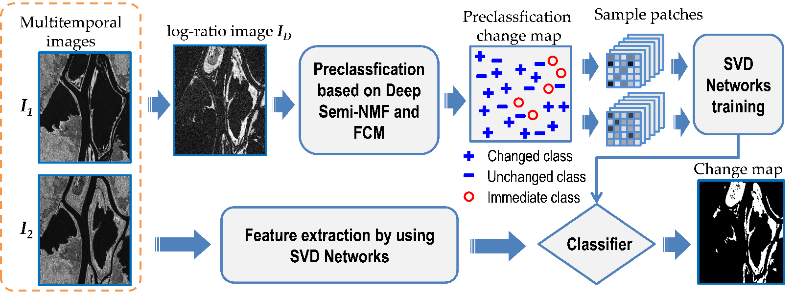
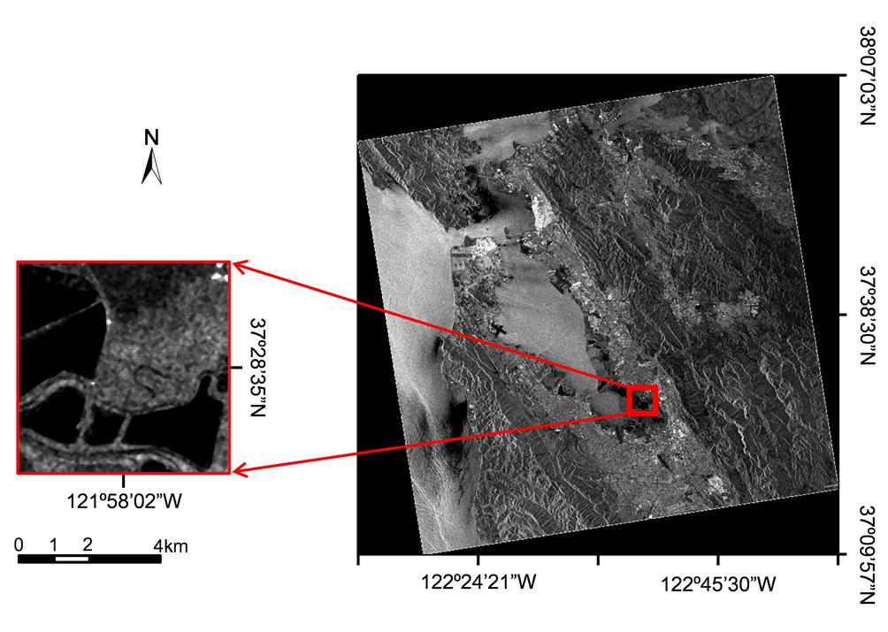
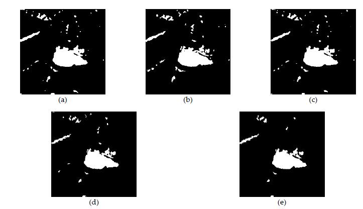
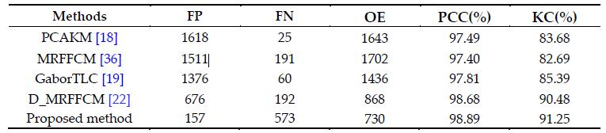

Last modified: 24, March, 2017
Feng Gao, Xiaopeng Liu, Junyu Dong, Guoqiang Zhong, Muwei Jian
Abstract: With the development of earth observation programs, more and more multi-temporal synthetic aperture radar (SAR) data are available from remote sensing platforms. Therefore, it is demanding to develop unsupervised methods for SAR image change detection. We proposed provides a simple yet effective framework for SAR image change detection. Firstly, Deep Semi-NMF is first utilized to select pixels that have high probability to be changed or unchanged as samples. Next, images patches centered at these sample pixels are generated from the input multi-temporal SAR images. Then we build SVD Networks which is comprised of two SVD convolutional layers and one histogram feature generation layer. Finally, pixels in both multi-temporal SAR images are classified by the SVD Networks, and then the final change map can be obtained. The experimental results on three SAR datasets have demonstrated the effectiveness and robustness of the proposed method.

Figure 1. The flow diagram of the proposed method.

Figure 2. SAR images acquired by ERS-2 over the city of San Francisco..

Figure 3. Change detection results generated by different methods on the San Francisco dataset. (a) Result by PCAKM [18]. (b) Result by MRFFCM [36]. (c) Result by GaborTLC [19]. (d) Result by D_MRFFCM [22]. (e) Result by the proposed method.
Table 1. Change detection results of different methods on the San Francisco dataset.
